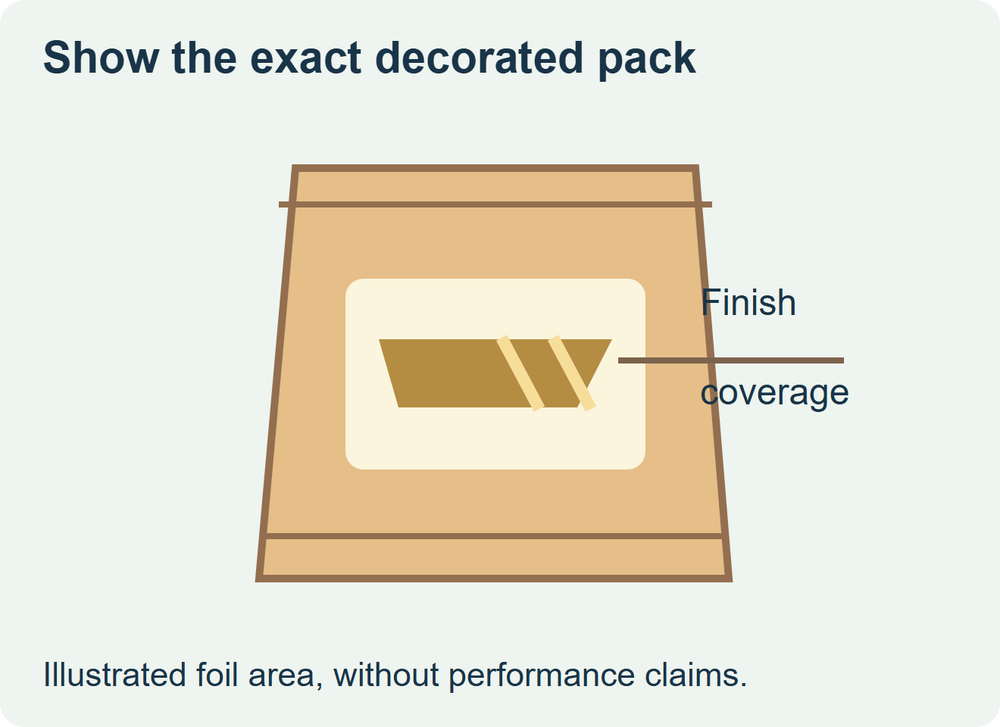
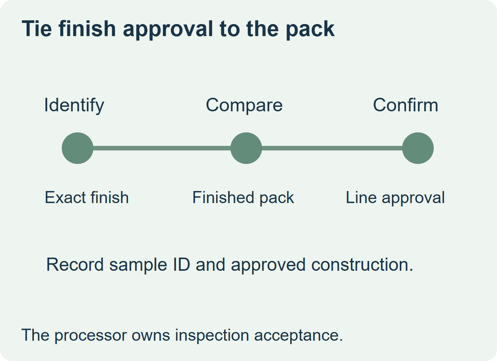

Before ordering a new metallic finish, give the inspection team the actual decorated pack. Approve the finish for production when the responsible team confirms the exact construction is covered by the existing inspection approval or passes the required qualification. If the team cannot confirm coverage, keep the order open and request an alternate appearance sample for comparison.


Describe the finish as a construction
Ask the converter whether the proposed effect uses transferred foil, a metallized face, metallic ink, or a nonmetallic printed effect. Request the affected area on the finished label and the construction reference. Use the same pack, contents and label position for comparisons so the line team can isolate the packaging change. A similarly colored proof does not identify the material used on the production label.
Inspection equipment maker Loma distinguishes metalized packaging from conventional packs and discusses why the equipment choice matters. A decorative label is only one component of the pack. The source does not predict how a particular label patch will affect a particular line. The installed equipment, underlying wrapper, food and finish coverage all belong in the assessment. Loma’s guidance on inspecting metalized packaging
| Proposal | Sample to give the inspection owner | Purchasing decision |
|---|---|---|
| New metallic construction | Original approved pack and actual proposed finished pack, with changed areas marked | Release only when the line owner documents scope or approves the required qualification. |
| Alternate printed effect | Actual converter sample with construction confirmed, on the same pack | Compare appearance and inspection approval before replacing the finish. |
| Unknown backing or finish coverage | Named specification and representative physical specimen | Hold the quote at sample stage until the construction is identified. |


Keep the inspection step with its owner
Map where labeling takes place relative to the established inspection step. Ask the food processor whether the label change triggers a review of its existing program and what representative samples it wants. Let the inspection owner and equipment provider specify trial method and acceptance. Retain the accepted sample ID and the exact finish reference on the purchase order so a later substitution can be reviewed.
Discuss the unresolved label requirement
Send the food pack construction, planned finish and its coverage drawing, the exact inspection stage relative to label application, plus the trial sample quantity requested by the line owner. Keep the processor’s acceptance criteria with the request. Review food label options and prepare a label specification inquiry. The contact page opens an email draft and lists email or WhatsApp for attachments. Supply, proof options, testing, pricing and timing require project confirmation.